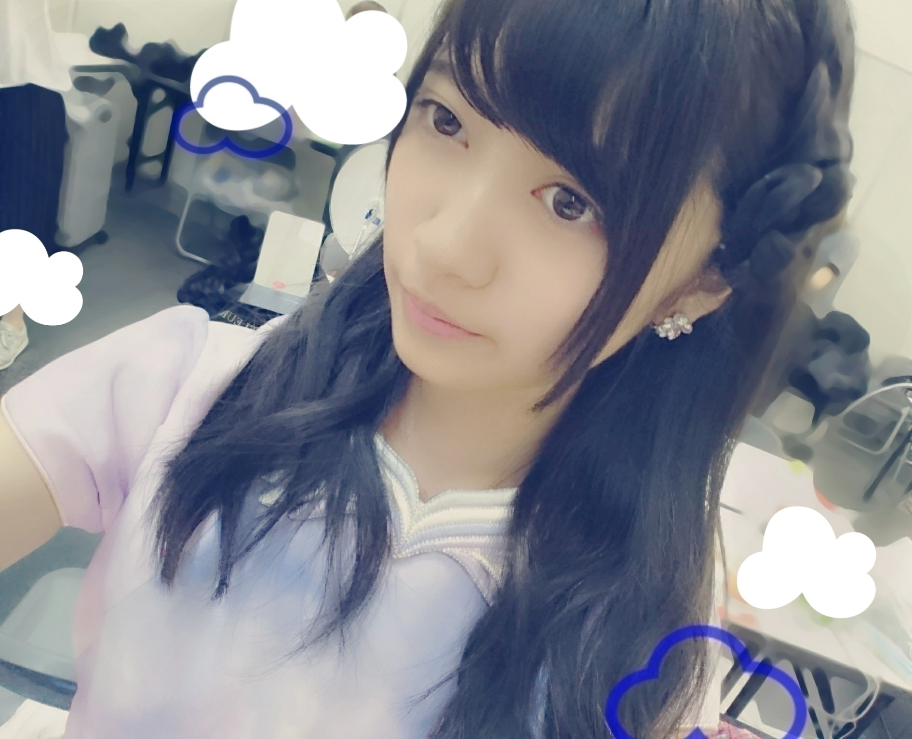
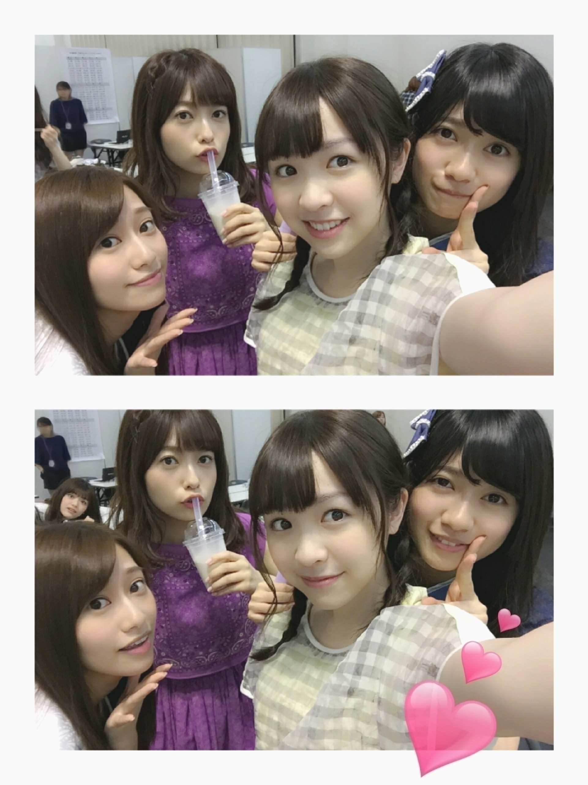

2016/0622Wed白いとこ
選抜総選挙
毎年ドキドキします、、、
まゆゆさん推しの私としてはやっぱり悔しさもあるけど
指原さん凄いな、、、
あと、佐藤すみれさんが
ランクインしてたのがすごく嬉しいです
まゆゆさんと
佐藤すみれさんが
私の推しメンです！
ご卒業されてますが
元SKE48さんの
平松可奈子さんも推してて
握手会にも行ったことありました
おはようございます
こんにちは
こんばんは
寺田蘭世です

アルバム個別握手会in京都
ありがとうございました(^^)
メールでは
すぐ書いたのですが
ちょっと寂しかったなm(._.)m
自分の気にし過ぎなのかもしれない
昔から些細なことでも
すぐ過剰に反応しちゃう性格なので
だけど、こういう事も
なにかの『きっかけ』に
繋がるだろうし
こういうことで
チャンスを掴むこともできるし
その反対だってありえます。
人生何がきっかけで
どうなるかは誰にも分からないけど
そのぶん大変ですが
そのぶん楽しいんだよね
楽しいだけでなく色々考える握手会でした！
でも、元気です！
心配かけてたら申し訳ありませんm(._.)m
４部は1部とかに比べて
沢山の方が会いに来てくださいました！
アルバムで初めましてさんも来て下さったりと嬉しかった(^^)
終始元気にやらせて頂きました
皆様
これからもよろしくね！
〈髪型〉
1部巻きおろし 頭にリボン
2部ハーフツイン
3部お花ヘアー
4部ポニーテール
3部のお花ヘアー
これです
私がよくやるやつ(^^)

〈衣装〉
1部太陽ノック デニムver
2部命は美しい
3部今、話したい誰がいる
4部ハルジオンが咲く頃
でした(^^)
最後にハルジオンを着ました
今回は11枚目〜14枚目シングルの衣装っという事ですが
京都でシングルの衣装殆ど着てしまいましたが
また、どこかで着ます！
嫉妬の権利のお衣装は、あまり披露する機会もなかったので
ここで見てもらいたいな
色は3色
・ピンク
・紫
・水色
があるのですが
ちなみに私は水色なのです
他のメンバーのを借りて
3色制覇したい！
太陽ノックデニムver

今日も朝からお仕事でした
早く解禁したい事が増えた(^^)良きことだ

《おまけ》
4ショットと
5ショット、、、
後ろのりんごさん、、、

2016/06/22 12:06
コメント(503)
総選挙ね。指原すごかったね。
ただゆきりんがショックすぎて。。。
立ち直れない。。。
らんぜかわいいよ✨✨
ただゆきりんがショックすぎて。。。
立ち直れない。。。
らんぜかわいいよ✨✨
蘭世おつかれー！
今度行くよー！
今度行くよー！
らんぜブログ更新ありがと！
ブログ更新ありがとうー！
アルバムの握手行きたかったなー！
でも15枚目のシングルはいくからね！
アルバムの握手行きたかったなー！
でも15枚目のシングルはいくからね！
蘭世の勢いとまらんぜ！！！！！！
らんぜー！今日も可愛いね！
お疲れ様！
かわいい〜\( *ˊᗜˋ* )/″♡♡
かわいい〜\( *ˊᗜˋ* )/″♡♡
蘭世握手会お疲れ様！
生誕委員入ってかき氷送らせてもらったよ！
1-4部参加しました！
めっちゃ可愛かった〜
電卓検定余裕で受かりそうだよ！エールありがとう！
スカジャンかっこいいって言ってくれたからあれで15枚目の握手会行きます！
15枚目の活動、Live頑張れ！
一生蘭世推しのゆうたより
生誕委員入ってかき氷送らせてもらったよ！
1-4部参加しました！
めっちゃ可愛かった〜
電卓検定余裕で受かりそうだよ！エールありがとう！
スカジャンかっこいいって言ってくれたからあれで15枚目の握手会行きます！
15枚目の活動、Live頑張れ！
一生蘭世推しのゆうたより
蘭世ブログ更新ありがとう！
7/10の握手会では、何着るの？？
楽しみにしてるよ！
7/10の握手会では、何着るの？？
楽しみにしてるよ！
おつかれさまー
今度パシフィコの握手会行きマース
楽しみにしてるね！
仕事頑張って！
今度パシフィコの握手会行きマース
楽しみにしてるね！
仕事頑張って！
まゆゆ推しは同じだ笑
京都行かなくてすみません（；＿；）
幕張も行かないけど横浜は行きますから、、
解禁するの楽しみに待ってます(^-^)/
京都行かなくてすみません（；＿；）
幕張も行かないけど横浜は行きますから、、
解禁するの楽しみに待ってます(^-^)/
蘭世ー！ブログ更新ありがとう!!!!!
太陽ノックのデニム衣装かわいいよね！
握手会おつかれさまぽよ。
15thも楽しみにしてるよ〜♪
がんばってね！°˖✧◝(⁰▿⁰)◜✧˖°
太陽ノックのデニム衣装かわいいよね！
握手会おつかれさまぽよ。
15thも楽しみにしてるよ〜♪
がんばってね！°˖✧◝(⁰▿⁰)◜✧˖°
蘭世が1番かわいいよ！
こんにちは！
１５枚目、悔しいかもしれないけどファンはいつだって味方ですよ！
１５枚目、悔しいかもしれないけどファンはいつだって味方ですよ！
らんぜ！！！！
土曜行くね！
土曜行くね！
解禁したいこと楽しみに待ってます〜
一生蘭世推しのゆうたより
一生蘭世推しのゆうたより
ブログ更新ありがとう
今度のシングルで名古屋の握手会行きます
応援してるよ
5人の写真いいねー
癒されました
今度のシングルで名古屋の握手会行きます
応援してるよ
5人の写真いいねー
癒されました
らんぜブログありがとーう！
京都少ししか行けなかったけど楽しかったよ！
握手会の時にも言ったけど15thは京都、名古屋、横浜に行くからねーー！
今度はいっぱい取っていくから待っててねー！！！
京都少ししか行けなかったけど楽しかったよ！
握手会の時にも言ったけど15thは京都、名古屋、横浜に行くからねーー！
今度はいっぱい取っていくから待っててねー！！！
こんにちは♪
久しぶりの休みに蘭世のブログがあがって、一気にテンションも上がったよ(*´艸`*)ｳｼｼ
握手会お疲れ様です♪
また今週末も握手会だよね
25日は行きます！
1部から行きます！
寝坊したらごめんなさい
叱ってね(><)
どんな髪型かなー
どんな衣装かなー
って考えてるだけでも楽しいのに、実際にその蘭世に会えるってなると、いやーやばいね(笑)
また楽しくお話出来たらなって思うな
↑これ毎回言ってるような...
暑くなってきたので、体調崩さないようにね
では
これからも
蘭世の勢い、止まらんぜーーー
久しぶりの休みに蘭世のブログがあがって、一気にテンションも上がったよ(*´艸`*)ｳｼｼ
握手会お疲れ様です♪
また今週末も握手会だよね
25日は行きます！
1部から行きます！
寝坊したらごめんなさい
叱ってね(><)
どんな髪型かなー
どんな衣装かなー
って考えてるだけでも楽しいのに、実際にその蘭世に会えるってなると、いやーやばいね(笑)
また楽しくお話出来たらなって思うな
↑これ毎回言ってるような...
暑くなってきたので、体調崩さないようにね
では
これからも
蘭世の勢い、止まらんぜーーー
おはおは！
可愛い写真いっぱいやな(๑′ᴗ‵๑)
指原強すぎな！笑
俺が推してた子は34.30.29位だったかな^^;
もう投票する気はないけど、、、
午後も頑張りましょう！
可愛い写真いっぱいやな(๑′ᴗ‵๑)
指原強すぎな！笑
俺が推してた子は34.30.29位だったかな^^;
もう投票する気はないけど、、、
午後も頑張りましょう！
拝啓
寺田蘭世様
ブログありがとう、楽しみにしてたよ。
次は、横浜で会えるから楽しみにしてるよ。
アンダーで頑張る蘭世見たいよ。必ず上に行こう。
まゆゆ入れたよ。ダメだった凄く残念だよ。
蘭世も次は頑張り、まゆゆも一位になってもらいましょう。
では、横浜で会いましょう。
寺田蘭世様
ブログありがとう、楽しみにしてたよ。
次は、横浜で会えるから楽しみにしてるよ。
アンダーで頑張る蘭世見たいよ。必ず上に行こう。
まゆゆ入れたよ。ダメだった凄く残念だよ。
蘭世も次は頑張り、まゆゆも一位になってもらいましょう。
では、横浜で会いましょう。
京都握手会行きました！
あまり枚数が無くてたくさんお話できなかったのが残念でした…
2部から4部行きましたが、1部行けなくて太陽ノックの衣装見れなかったです(;_;)
アルバム個握は他のところ行けないですが、15thはたくさんとる予定なのでよろしくお願いします！
蘭世の勢いは本当にすごいと思うのでこれからも頑張ってください！！
あまり枚数が無くてたくさんお話できなかったのが残念でした…
2部から4部行きましたが、1部行けなくて太陽ノックの衣装見れなかったです(;_;)
アルバム個握は他のところ行けないですが、15thはたくさんとる予定なのでよろしくお願いします！
蘭世の勢いは本当にすごいと思うのでこれからも頑張ってください！！
今週末の幕張個握と、7月の横浜のも行くよ〜！
はじめましてになるけどよろしくね(^^)
お仕事の内容楽しみにしてるね！！
はじめましてになるけどよろしくね(^^)
お仕事の内容楽しみにしてるね！！
10月の京都の個握行く！！
GWの京都の全握の次がその個握だから待ちきれない……
GWの京都の全握の次がその個握だから待ちきれない……
蘭世ー
やっほー！
やっほー！
蘭世こんにちは！
今週のアルバム個握行きますね！
一つの曲でも何パターンか衣装があるっていうのが魅力ですね！
すべて好きですか、お花の髪型めちゃくちゃ好きなので見たいですねえ…。
お仕事がかなり気になりますが、それを楽しみに最近生きています！(・_・)
今週末会いましょう！
では！
今週のアルバム個握行きますね！
一つの曲でも何パターンか衣装があるっていうのが魅力ですね！
すべて好きですか、お花の髪型めちゃくちゃ好きなので見たいですねえ…。
お仕事がかなり気になりますが、それを楽しみに最近生きています！(・_・)
今週末会いましょう！
では！
蘭世かわいいなぁ。
蘭世の握手会行きたい。。
蘭世の握手会行きたい。。
らんぜ
お疲れ様
全ツ&バスラ
今から
楽しみです
ボチボチ
頑張ってね
お疲れ様
全ツ&バスラ
今から
楽しみです
ボチボチ
頑張ってね
こんにちは( *ˊᵕˋ)ﾉ
ブログ更新ありがとぅございます
ブログ更新ありがとぅございます
ブログありがとー
土曜握手会行くから待っててね^ ^
土曜握手会行くから待っててね^ ^
蘭世ブログ更新ありがとう！！
総選挙今年も盛り上がったね〜！
みくりんみくりん♪
アルバム京都行きたかった〜
もっとバイト頑張っていつか京都に
行けるようになりたいな〜
今はまだ関東だけ(><)
けど15thの、個握名古屋に行こうか
迷っております。
笑顔の蘭世が沢山見たいし
なによりもとても会いたいので
多分行きます！！
初遠征になるかな？楽しみです！
明日は4次応募かな？
忘れずに応募するね！
髪型かわいいなぁ...
ハーフツイン見たかった〜！！
けど私はツインテールが一番好き
だから25日少し期待しておきますwwww
まあ全部似合うし可愛いんだけどね！
早く土曜日になって欲しい！
楽しみにしとくね〜！
今日は具合悪くて学校休みました、
昨日は早退で今日は休み
他にも遅刻だらけで
だいぶヤバイかもです。
高校続けられるかな...。
けど、その気持ちを吹き飛ばすくらい
元気で笑顔で、一生懸命の
蘭世をみてると私も頑張らなきゃ！
と思います。本当に支えられてます(><)
じゃあ、また夜コメントできたらするね！
また後で〜！
総選挙今年も盛り上がったね〜！
みくりんみくりん♪
アルバム京都行きたかった〜
もっとバイト頑張っていつか京都に
行けるようになりたいな〜
今はまだ関東だけ(><)
けど15thの、個握名古屋に行こうか
迷っております。
笑顔の蘭世が沢山見たいし
なによりもとても会いたいので
多分行きます！！
初遠征になるかな？楽しみです！
明日は4次応募かな？
忘れずに応募するね！
髪型かわいいなぁ...
ハーフツイン見たかった〜！！
けど私はツインテールが一番好き
だから25日少し期待しておきますwwww
まあ全部似合うし可愛いんだけどね！
早く土曜日になって欲しい！
楽しみにしとくね〜！
今日は具合悪くて学校休みました、
昨日は早退で今日は休み
他にも遅刻だらけで
だいぶヤバイかもです。
高校続けられるかな...。
けど、その気持ちを吹き飛ばすくらい
元気で笑顔で、一生懸命の
蘭世をみてると私も頑張らなきゃ！
と思います。本当に支えられてます(><)
じゃあ、また夜コメントできたらするね！
また後で〜！
蘭世お疲れ様(^^)
京都の握手会に初めて行ったよー(｀・ω・´)
これまで仕事とかで行けなかったからやっと行けて楽しかったよ(*´ω`*)
また15thの握手会行くからねー！
京都の握手会に初めて行ったよー(｀・ω・´)
これまで仕事とかで行けなかったからやっと行けて楽しかったよ(*´ω`*)
また15thの握手会行くからねー！
握手会おつかれさまでした( ´ ▽ ` )ﾉ
まだまだこれからだと思うから、焦らず蘭世ちゃんのペースでがんばりましょう！
関東でのアルバム握手会も楽しみにしています(﹡ˆˆ﹡)
まだまだこれからだと思うから、焦らず蘭世ちゃんのペースでがんばりましょう！
関東でのアルバム握手会も楽しみにしています(﹡ˆˆ﹡)
京都も行きたかったけど遠くて行けなかったから次の幕張で蘭世に会えるの楽しみにしてます！
蘭世お疲れ様！
握手会7月10日行くよー！
どの衣装着るかわからないけどかなり楽しみにしてるよ
握手会7月10日行くよー！
どの衣装着るかわからないけどかなり楽しみにしてるよ
蘭世(*´∀`)ﾉ ♪
この間の握手会で
忙しくなるから来れなそうって
言ったけど
やっぱ蘭世のこと
ほっとけないや〜(´Д｀)
つむつむするね！
この間の握手会で
忙しくなるから来れなそうって
言ったけど
やっぱ蘭世のこと
ほっとけないや〜(´Д｀)
つむつむするね！
蘭世(*´∀`)ﾉ ♪
この間の握手会で
忙しくなるから来れなそうって
言ったけど
やっぱ蘭世のこと
ほっとけないや〜(´Д｀)
つむつむするね！
この間の握手会で
忙しくなるから来れなそうって
言ったけど
やっぱ蘭世のこと
ほっとけないや〜(´Д｀)
つむつむするね！
らんぜやほー！
握手会お疲れ様♪
部によって髪型とか衣装、変わるなら全部の部行きたいな〜。
寂しい思いさせてごめんね。
俺も行けるときはなるべく行きたいんだけどね〜。
でも来てくれる人一人一人を大切に思える、そんなきっかけになったらいいな〜。
決してマイナスな出来事のきっかけにならないといいな。
じゃ、またね！メールもいつもありがとう！
広輝でした〜
握手会お疲れ様♪
部によって髪型とか衣装、変わるなら全部の部行きたいな〜。
寂しい思いさせてごめんね。
俺も行けるときはなるべく行きたいんだけどね〜。
でも来てくれる人一人一人を大切に思える、そんなきっかけになったらいいな〜。
決してマイナスな出来事のきっかけにならないといいな。
じゃ、またね！メールもいつもありがとう！
広輝でした〜
まゆゆ、すーめろ、えれぴょんの自分らしさが好きなんやけど蘭世も好きやったりする？
まゆゆ、すーめろ、えれぴょんの自分らしさが好きなんやけど蘭世も好きやったりする？
いいですね！
こんにちは！
選挙が気になる風点です！
らんぜ！握手会おつかれさまでした！
お姫様みたいな格好が本当に似合うね。
推しメンも、やっぱりそういう雰囲気のコが多いみたいだね。
最近、2期生たちの心に熱いものを感じるので、これからを楽しみにしてます！
質問
たまにある質問コーナーに名前は付けないんですか？
らんぜにきかんとわからんぜ！
とか。
すみません。これが言いたかっただけです。
またねー。
らんぜ！ブログ更新ありがとうございます！
ユンです(> <)
普段は夜にブログを確認するんですけど
今日はなんか気になって昼から確認したら
らんぜのブログが！！！
なんか今日はいい日になる気がします (><)
アルバム握手会！！
本当にお疲れ様でした！
ライブ衣装ですね！
なんか普段とは違う感じにもりあがりますね！
私服もめっちゃ好きですけど
これはこれでまた良いです(^^)
僕は7月の握手会に行きます！
アルバム握手会は人が少ないと聞きましたけど
僕が100人分楽しみたいと思います！
だからよろピクピクーです (*^^*)
らんぜが落ち込んでると僕も悲しいですから
最近なんか仕事が多いですね！
僕は今週から夏休みです
韓国の大学は夏休みが早いですので 笑
だからなんかすることもなく
家でゴロゴロしてます。。。(^^)
仕事もたまにはいいですね！笑
頑張ってください！
応援してます！
あああああ 早く7月になって握手会行きたいです ~(><)
昨日より今日もっと会いたいし
明日もそうかもしれません (*^^*)
仕事頑張ってください！
また~~~！
世界中へピースです(^^)
ユン
ユンです(> <)
普段は夜にブログを確認するんですけど
今日はなんか気になって昼から確認したら
らんぜのブログが！！！
なんか今日はいい日になる気がします (><)
アルバム握手会！！
本当にお疲れ様でした！
ライブ衣装ですね！
なんか普段とは違う感じにもりあがりますね！
私服もめっちゃ好きですけど
これはこれでまた良いです(^^)
僕は7月の握手会に行きます！
アルバム握手会は人が少ないと聞きましたけど
僕が100人分楽しみたいと思います！
だからよろピクピクーです (*^^*)
らんぜが落ち込んでると僕も悲しいですから
最近なんか仕事が多いですね！
僕は今週から夏休みです
韓国の大学は夏休みが早いですので 笑
だからなんかすることもなく
家でゴロゴロしてます。。。(^^)
仕事もたまにはいいですね！笑
頑張ってください！
応援してます！
あああああ 早く7月になって握手会行きたいです ~(><)
昨日より今日もっと会いたいし
明日もそうかもしれません (*^^*)
仕事頑張ってください！
また~~~！
世界中へピースです(^^)
ユン
蘭世のメールが嬉しくて私は毎日元気に生活してます…！
相変わらず可愛くて癒し
相変わらず可愛くて癒し
お仕事お疲れ様です！
京都でのアルバム個握ありがとうね！
先生も楽しかったって言ってたよ！
15thも握手行くからよろしくね！
あつき
京都でのアルバム個握ありがとうね！
先生も楽しかったって言ってたよ！
15thも握手行くからよろしくね！
あつき
アスレチックからの大ファンです
選抜に入ったらイイね。次はイケる絶対 自信持ってガンバレ
自信持ってガンバレ
選抜に入ったらイイね。次はイケる絶対
可愛い
アスレチックからの大ファンです
選抜に入ったらイイね。次はイケる絶対 自信持ってガンバレ
選抜に入ったらイイね。次はイケる絶対
蘭世ブログ更新有り難う！！
お疲れ様です(^^)
京都の握手会すごく行きたかったけど行けなかった(>_<)
太陽ノックのデニムverすごく見たかったよ！！
今週の握手会は行くからね(^o^)/楽しみにしてます！！
お疲れ様です(^^)
京都の握手会すごく行きたかったけど行けなかった(>_<)
太陽ノックのデニムverすごく見たかったよ！！
今週の握手会は行くからね(^o^)/楽しみにしてます！！


おんなじーーー！
命の衣装にあってるにこ